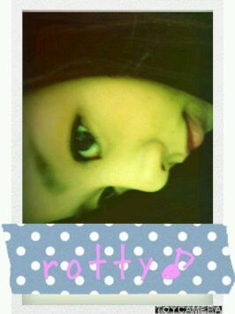

| 2012/03 29 Thu | 川村真洋 次こそ質問返し。☆・ω |
この前、題名に『質問返し』
って書いて、
質問返ししてないから
コメントでむっちゃ
つっこまれました・・・。笑っ^ω^
あっ、ろってぃー♪ですっ(*^^*)

★ファンレター出したいんやけど
宛先ってどうなってるの？
☆詳しくは公式ホームページ#・ω
★まろにーちゃん♪って呼んでいい？
☆いいですようっ^^
あっ、もしろってぃーって呼ばれんくなったら
『まろにぃ〜』ってメンバーにも
呼んでもらいたいなっ・ε・)
★乃木坂がTVに出てる時
無意識にまひろちゃん♪を
探している自分がいます。
このまま好きになってもいいですか？
☆すごい嬉しい(⌒‐⌒)
まひろで良ければ♪
★幼い頃何ですか呼ばれていましたか？
☆ひろちゃん♪
生まれてから8才位まで
ひろちゃんでしたω
家族からはずっとひろちゃんですけどね^^
★芸能人になるために
これはちゃんとしておかないといけないと言う基本は？
☆ん〜、挨拶はもちろんで
心の強い人間ぢゃないとねっ・ω・
★パンは何が好き？
☆・カレーパン
・ハチミツパン
・つぶあん
・バターのっけて、チーン♪した
食パン。
★ろってぃ-Tシャツ作っていいかなぁ？
☆めっちゃ楽しみにしてます(*^^*)
作ってほしいです(⌒‐⌒)
★和歌山行った時白浜にでも
行ったのかな？
☆幼稚園の頃から毎年
白浜の海に行って真っ黒に
なってました＾ω＾
★憧れの人誰？
☆・福原美穂さん
・絢香さん
・安室奈美恵さん
...アーティスト全員に憧れを持ってます・ε・
★個性的な格好の男性ってどう思う？
☆めっちゃいいと思います^^
個性的な人が友達にいると
楽しいw(*^^*)
まひろ個性的なん好きだしね。
★イベントの時『まひろwwww』
っておもいっきり叫んでいい？
☆どでかいのを期待してます♪♪
★男はショートヘア-派？ロングヘア-派？
☆ヘアスタイルで自分の個性を
出せているのがいいですねぇーい(⌒‐⌒)
★メンバーで、お姉さんキャラと
妹キャラといじられキャラは？
☆まひろからしてやったら^^
お姉ちゃんは、せいらりん。
妹は、まあや。
いじられは、まりか。
★「おんっ♪」と「たっくん♪」の使い方教えて!
☆おん♪=うん♪ってことで
たっくん♪はちょっと怒った時に
『本間たっくんやわ!><』
っていいます♪
まひろだけやと思うけどね
(*^^*)
★まひろんってどうですか？
☆かわいいぢゃんっ!笑
(そっちこそ♪)
★ろってぃーが好きな番号はなんですか？理由も知りたいな♪
☆なんやろなぁ〜(^-^)
『2』かのう。
今ぱっと思いついただけ＾＾
★NARUTO好き？
☆大好き！
毎週アニメ録画してるってばよおっ！!^^
★まひろさんの好きなファッションスタイルは？また好みのショップがあれば教えて＾＾
☆シンプルでかっこいい
安室ちゃん系や
ストリート系等色々着ますω))
最近09に行っていつも入るshopは
monkey.biteと言うお店です♪
★どんなお菓子好き？
☆和菓子とチョコレートω
何でも好き・ω・
だけどスナック系は好きやけど
食べないー。♪
★好きな小説は？
☆小説読まないんです(T-T)
★握手会やイベントなどに来てくれるファンのみんなの顔は覚えてる？
☆よくコメントしてくれている人や
目立つ格好、特徴ある形で来てくれたりすると
すごく印象にのこりますっ^ω^
★好きなキャラは？
☆性格のことかな？
まひろは、嫌みのない自然な人が好きです(*^^*)
★シシャモの顔は食べる？
☆食べないです＾＾
★好きな紅茶は何？
レモンティー？ミルクティー？
まひろってぃー？笑
☆紅茶飲まないんですけど、
最近になってたまに
ミルクティーを飲む様になりました♪
あと、まひろってぃー☆笑